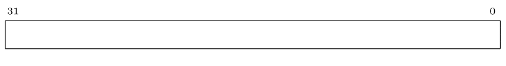
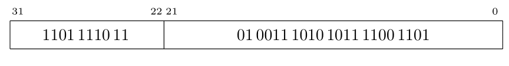

Carmi Merimovich
Personal Site
personal site >>> Teaching >>> 2021/2 >>> 2021-2B Intro. to Computer Architecture >>> 2022-08-18 >>> 32 ביט כתובת וירטואלית, 32 ביט כתובת פיזית, 4KB גודל דף
כתובת וירטואלית 32, כתובת פיזית 32, גודל דף 4KB
כתובת וירטואלית נראית כך:

גודל דף הוא
4KB
ולכן שדה ההיסט ברוחב 12 ביטים
(212 = 4 × 210 = 4K).
ולכן יש עשרים ביטים בשדה מספר דף וירטואלי.

כיון שגודל דף וירטואלי וגודל דף פיזי שווים,
כתובת פיזית נראית כלהלן:

בעיית רציפות פיזית
כיון שרוחב ה-vpn הוא 20 ביטים, בטבלת התירגום יש לכל היותר 220 = 1M מקומות. מספר זה הינו בהחלט עצום מכדי להחזיק אוגרים ב-mmu עבורו, כפי שציינו בעבר. הבעייה שנוספת לנו עכשיו היא שגודל טבלת התרגום יכול להגיע ל-4MB. אם נשתמש בשיטת הקודמות המשמעות היא שאנחנו צריכים 1024 דפים רציפים פיזית כדי להחזיק את טבלת התירגום. (1024 דפים שבכל אחד מהם יש 1024 כניסות יתן לנו 220 כניסות.) זה כמובן לא בא בחשבון. אחת המוטיבציות לשימוש בטבלאות תירגום היא להיפטר מדרישות רציפות קיצוניות. וכאשר גודל דף הוא 4KB כל דרישת רציפות פיזית שהיא מעל 4KB נחשבת קיצונית!
פתרון בעיית הרציפות
נפתור את הבעיה בדיוק כפי שפתרנו אותה עבור הזיכרון של התוכנית. כלומר נארגן טבלת תירגום עבור טבלת תירגום. כלומר נפצל את טבלת התירגום ל-1024 טבלאות פנימיות, כאשר כל טבלה פנימית תתפוס 4KB. ותהיה לנו טבלה חיצונית שבה יהיה מקום ל-1024 כתובות בהן נמצאות הטבלאות הפנימיות. גם הטבלה החיצונית תהיה בגודל 4KB, ובכך פתרנו לחלוטין את נושא הרציפות המוגזמת. כמובן, לפי חוק שימור הנאחס, משהו חייב להינזק. ואכן זמן הריצה ניזוק כיון שנצטרך שתי גישות לזיכרון כדי לתרגם כתובת וירטואלית לכתובת פיזית.
המבנה הכולל
סך הכל: ב-mmu יהיה אוגר שיכיל את הכתובת הפיזית של הטבלה החיצונית. בטבלה החיצונית יש 1024 כניסות שמצביעות לטבלאות פנימיות.
בכל כניסה צריך מקום ל-20
ביטים עבור
ppn,
ובנוסף לדגלים.
אנחנו נשתמש בכניסה ברוחב 4 בתים במקרה זה.
נניח שכניסה בטבלת התרגום נראית כך:
נשאר לנו פריט אחד וזה מבנה האוגר
ב-mmu
שמצביע על טבלת התרגום.
על פניו מדובר פשוט באוגר ברוחב 32 ביטים
שמכיל את כתובת תחילת הווקטור.
וזה אכן המצב בהגבלה אחת.
כיון שההיסט מתחילת הווקטור הוא מספר הקטן מ-4096
אזי 12 הביטים הימניים של הכתובת חייבים להיות מאופסים.
הגבלה זו תחסוך לנו חיבור בחישוב כתובת התא הנחוץ.
 כמובן שהשיטה בה האוגר מכיל רק את מספר הדף הפיזי של הטבלה החיצונית
קיימת גם כן.
כמובן שהשיטה בה האוגר מכיל רק את מספר הדף הפיזי של הטבלה החיצונית
קיימת גם כן.
חישוב כתובת פיזית
ואחרי כל זה, איך ה-mmu ידע לחשב כתובת פיזית?
טבלה לינארית
לוגית
עדיין יש לנו טבלת תרגום.
נניח שהמשתנה
pagetbl
מתאר ווקטור שכל כניסה בו היא בגודל 4 בתים.
אזי שליפת הכניסה המתאימה היא מיידית:
pagetbl[vpn].
אינדקס לטבלה חיצונית
כיוון שטטבלת התרגום פוצלה צריך לדעת באיזה "חתיכה" נמצאת
הכניסה
vpn.
זה קל.
בכל חתיכה יש 1024 כניסות.
ולכן הכניסת
vpn
נמצאת בחתיכה
vpn/1024.
נקרא לערך הזה
i0.
בעזרת האינדקס הזה ניגש לטבלה החיצונית וכך נקבל את הכתובת
שך הטבלה הפנימית
(כמובן, יש מחיקת ביטים, ואולי הזזות).
אינדקס לטבלה פנימית
בהינתן הכתובת של הטבלה הפנימית איך נמצא בה את הכניסה
המתאימה?
ובכן, זו פשוט השארית
vpn % 1024.
נקרא לערך זה
i1
וזה האינדקס הנחוץ.
מבנה כללי של האינדקסים
כמובן "שבמקרה" החלוקה והשארית הן חזקות של 2,
כך שלמעשה מדובר בשדות של ביטים שקל לצייר:
נאצר שכתובות וירטואליות שנראות כמו השירטוט למעלה הן מהצורה (10,10,12).
UNDER CONSTRUCTION
דוגמא
הטבלה ארוכה מכדי שנרשום אותה פה... נניח שטבלת התרגום מתחילה בכתובת ABCDE000.
לאיזו כתובת פיזית תתורגם הכתובת הוירטואלית
F713ABCD?
נתרגם לבינרית:
 משמע
ה-vpn
הוא
3DC.
ה-vpn
הינו אינדקס לווקטור, ולצורך גישה לזכרון צריך לחשב את הכתובת.
לכן צריך להכפיל את האינדקס פי 4.
זה יותר קל בבינרית:
11 1101 11 002 × 410 = 1111 0111 00002 = F7016
משמע
ה-vpn
הוא
3DC.
ה-vpn
הינו אינדקס לווקטור, ולצורך גישה לזכרון צריך לחשב את הכתובת.
לכן צריך להכפיל את האינדקס פי 4.
זה יותר קל בבינרית:
11 1101 11 002 × 410 = 1111 0111 00002 = F7016
אז עכשיו צריך להסתכל בזכרון בכתובת
ABCDEF70.
נניח שזה התוכן:

ה-valid
הוא אמת.
לכן לשדה
ppn,
שערכו 1101111011,
יש משמעות והוא יחליף את
ה-vpn של הכתובת הוירטואלית
F713ABCD.
כלומר נקבל:

ובהקסה הכתובת הפיזית היא DED3ABCD.